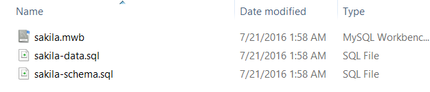
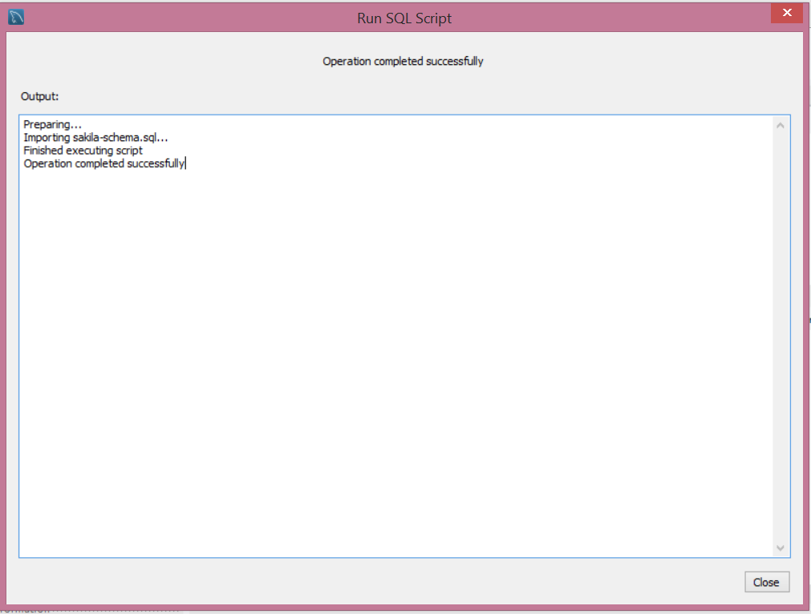
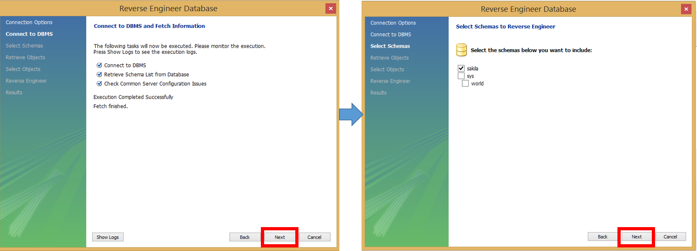
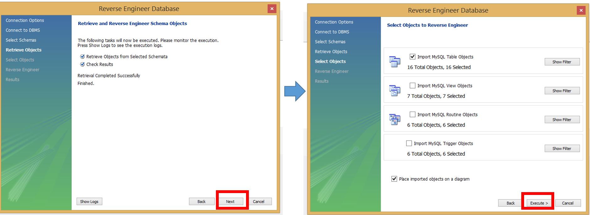

SQL WHERE Syntax
SELECT column_name,column_name
FROM table_name
WHERE column_name operator value;Example
SELECT *
FROM Customers
WHERE Country='Mexico';SQL GROUP BY Syntax
SELECT column_name, aggregate_function(column_name)
FROM table_name
WHERE column_name operator value
GROUP BY column_name;Example
SELECT customer_id, count(*)
FROM Customers
GROUP BY customer_id;


SELECT *
FROM Student
INNER JOIN Grade
ON Student.ID = Grade.ID
INNER JOIN Course
ON Grade.Code = Course.Code;












What are the names of all the languages in the database (sorted alphabetically)?
SELECT language.name
FROM sakila.language
ORDER BY language.nameReturn the full names (first and last) of actors with “SON” in their last name, ordered by their first name.
select first_name, last_name
from sakila.actor
where last_name LIKE '%son%‘
order by first_nameFind all the addresses where the district is empty, and return these addresses sorted by city_id in ascending order
select address
from sakila.address
where district='' order by city_id asc;
Display the film title and the film category it belongs to. Return the names of these categories and the name of the film, sorted by the name of the film alphabetically
select film_category.category_id, film.title from film_category
inner join film
on film_category.film_id=film.film_id
order by film.title
Display the film category id and the number of films that belong to each category. Then return the results, sorted by the number of the films that belong to each category
Select a.category_id, count(a.film_id) as NumberOfFilms
from film_category a
group by a.category_id
order by NumberOfFilms
Display the film category id that contain more than 50 films. Then return the results, sorted by the number of the films that belong to each category
select b.name, count(a.film_id) as NumberOfFilms
from film_category a
inner join category b
on a.category_id=b.category_id
group by a.category_id
having NumberOfFilms>49
order by NumberOfFilms
Display the film categories (film_category_id) where the average difference between the film replacement cost and the rental rate larger than 17?
select a.category_id, avg(b.replacement_cost - b.rental_rate) dif
from sakila.film_category a
inner join sakila.film b
on a.film_id=b.film_id
group by a.category_id
having dif> 17Create a list of films and their corresponding category names
select c.`name`, a.title
from sakila.film a
inner join sakila.film_category b
on a.film_id=b.film_id
inner join sakila.category c
on c.category_id=b.category_id
Display the film categories (names) where the average difference between the film replacement cost and the rental rate larger than 17?
select c.name, avg(b.replacement_cost) cost, avg(b.rental_rate) rate
from sakila.film_category a
inner join sakila.film b
on a.film_id=b.film_id
inner join sakila.category c
on c.category_id=a.category_id
group by a.category_id
having cost-rate> 17
Create a list of actors (id, first, last name) and the number of films by each actor, that have played. Display the results sorted by the number of films each actor has participated in.
select a.actor_id, a.first_name, a.last_name, count(b.film_id) as NumberOfFilms
from sakila.actor a
inner join sakila.film_actor b
on a.actor_id=b.actor_id
group by a.actor_id, a.first_name, a.last_name
order by NumberOfFilms 
Create a list of actors (id, first, last name) and the number of movies by each actor, that have played in movies that had a duration more than 183 minutes. Display the results sorted by the number of films each actor have participated.
select a.actor_id, a.first_name, a.last_name, count(b.film_id) NumberOfFilms, c.length
from sakila.actor a
inner join sakila.film_actor b
on a.actor_id=b.actor_id
inner join sakila.film c
on c.film_id=b.film_id
where c.length>183
group by a.actor_id, a.first_name, a.last_name
order by NumberOfFilms 
Find the title of English films having category of ‘Documentary’.
select c.title
from sakila.category a
inner join sakila.film_category b
on a.category_id=b.category_id
inner join sakila.film c
on b.film_id=c.film_id
inner join sakila.language d
on c.language_id=d.language_id
where a.name='Documentary' and d.name='English'List the film id and titles of those films that are not in inventory.
select a.film_id, a.title
from sakila.film a
where a.film_id not in (
select b.film_id from sakila.inventory b);Identify Classes & Associations
These are the abstract or physical “things” in our system which we wish to describe. Find all the nouns and noun phrases in the domain descriptions you have obtained through your analysis. Consider these class candidates. The class candidates are departments, professor, course, and course section.